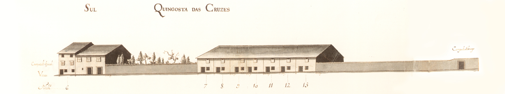

Quingosta das Cruzes - Norte.
Quingosta das Cruzes - Sul.
34 |
Cangosta das Cruzes |
Quingosta das Cruzes - Norte. |
|  Quingosta das Cruzes - Sul. |
De características bem rurais ligava o Campo de S. Tiago com a fachada latera Poente do hospital de S. Marcos.
Não se conhecendo dados sobre a sua história, podemos apenas dizer que em 1750 estava só parcialmente construída, com casas simples, de 2 pisos, muitas delas com janelas de tipo bracarense. Um correr de habitações do tipo de porta com janela ao lado, no piso térreo (prazos 7 a 13), bem como a casa grande, mas de características rurais, virada ao campo de S. Tiago, são as peças de arquitectura desta rua, ainda hoje, bem secundária e, também, com muitos poucos edifícios a ladeá-la.
Das 17 casas ao lado Norte e 9 do lado Sul, eram prazos do Cabido 5 e 8 respectivamente.
Não sabemos a razão porque esta Cangosta foi conhecida pelo nomes das «Cruzes», nem sabemos qual a data em que passou a ser conhecida pelo nome actual, «Falcões», embora em 1857 já assim apareça designada. Essa designação deverá ser mais antiga e provém, sem dúvida, do nome da família Falcões Cota cujo palácio existente no Campo de S. Tiago tinha a envolvê-lo terrenos desta rua, os que estão a Oeste do prazo nº 13.
| Número | Enfiteuta | Foro | Descrição |
| 1 | Porta de serventia do nº 20 da Rua do Anjo. | ||
| 2 | Pertence ao nº 17 da Rua do Anjo. | ||
| 3 | Porta de serventia do nº 15 da Rua do Anjo. | ||
| 4 | Pertence ao nº 14 da Rua do Anjo. | ||
| 5 | Pertence ao nº 13 da Rua do Anjo. Confronta, do norte, com casa foreira ao Hospital de S. Marcos. | ||
| 6 | Leira denominada Castelo Rodrigo, pertencente ao quintal de uma casa dízima a Deus. | ||
| 7 a 13 | Estevão Falcão Costa | Os subenfiteutas pagam foro ao nº 1 do Campo de Santiago. |